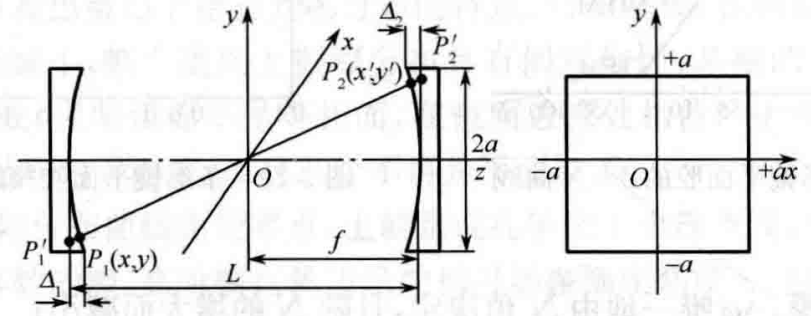

一般稳定球面腔的模式理论是以对称共焦腔的解析理论为基础，因此对称共焦腔的解析解在开腔模式理论中占有重要地位.
Boyd和Gordon首先证明：方形镜共焦腔自再现模积分方程具有严格的解析函数解，它们是一组特殊定义的长椭球函数，且当腔的Fresnel数足够大时，可近似表示为厄密多项式与高斯函数乘积的形式.
而圆形球面镜共焦腔本征函数的解为超椭球函数，当腔的Fresnel数足够大时，可近似表示为拉盖尔多项式与高斯函数乘积的形式.
本节将分别介绍方形镜共焦腔与圆形镜共焦腔的自再现模积分方程的解析解，然后在此基础上讨论它们的自再现模即自再现模所激发的行波场的特征.
方形镜对称共焦腔的两个凹球面反射镜的孔径是方形的.
首先将开腔自再现模积分方程的积分核对于方形镜对称共焦腔进行简化，并推导方程的解析解，然后在此基础上讨论它们的自再现模与行波场的特征.
[设]谐振腔如图所示，由线度为\(2a\times 2a\)的两个曲率半径相同的正方形球面反射镜所构成的共焦腔.

因镜面孔径为正方形，故镜面坐标采用直角坐标系.
镜面的线度\(a\)、曲率半径\(R\)与镜面间距离\(L\)及波长\(\lambda\)满足以下关系：
$$L\gg a\gg \lambda,\quad \frac{a^2}{L\lambda}\ll \left(\frac{L}{a}\right)^2$$如图所示，两镜面上任意两点间的连线长度为：
$$r(x,y,x',y') = \overline{\text{P}_1\text{P}_2} = \overline{\text{P}_1'\text{P}_2'} - \overline{\text{P}_1'\text{P}_1} - \overline{\text{P}_2'\text{P}_2}$$